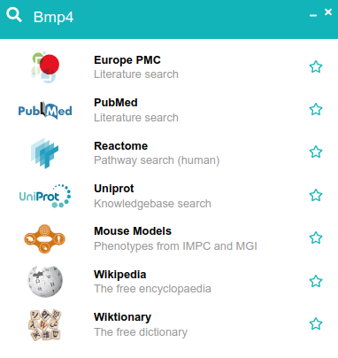
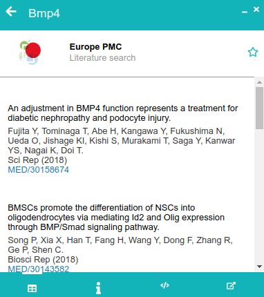
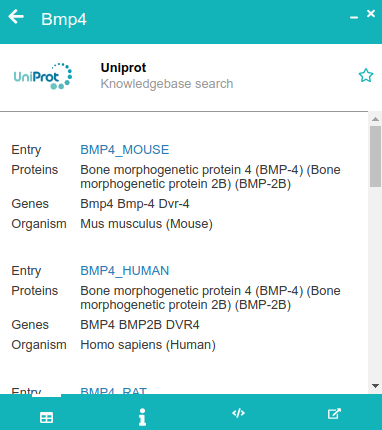

FAIR-biomed a browser extension for accessing open biomed data

FAIR-biomed helps to access open biomedical data resources from any web page.
About
Vasts amounts of biomedical data are stored in open databases and knowledge-bases. Data in these resources are intended to be findable, accessible, interoperable, and reusable (FAIR). However, the data is distributed across many resources and integrating relevant parts within a specific project can be a challenge.
FAIR-biomed brings open data resources directly to specific research situations. Consider, for example, reading a report in the browser. With FAIR-biomed, you can access additional information on any part of the report without leaving the page.
To make use of the extension, first highlight some text, for example, a gene name. Press Ctr+Shift+Z on the keyboard (alternatively right-click > FAIR-biomed search with the mouse). A new box should appear prompting you to choose a data source to query.

Clicking on one of the options triggers a query to the corresponding data service and displays a summary of results.
 
Search results provide summaries of the data resource, details of how the data query was executed, and a link to further data.
Data sources
The FAIR-biomed app is composed of core components and a library of plugins. Each of the plugins provides access to a data resource and a specific query type.
The current plugin library provides access to a varied set of data sources.
| Data source | Plugins |
|---|---|
| ClinGen | Allele registry |
| EBI | Identifiers, ontology, GWAS, and chemical data |
| Europe PMC | Literature |
| ExAC | Genomic variant annotation |
| Genomics England | PanelApp |
| HGNC | Gene nomenclature |
| IMPC | Mouse model phenotypes |
| JASPAR | Transcription factor binding profiles |
| LNCipedia | non-coding RNAs |
| MARRVEL | Disease associations, gene expression |
| NCBI | Literature, gene summaries, significance of genetic variation |
| Reactome | Pathways |
| STRING | Protein interaction networks |
| UCSC | Genomic regions |
| Uniprot | Knowledgebase |
| Wikimedia | Encyclopaedia and dictionary |
Practical guide
Installation
The extension is available from the chrome web store. Select the extension in the web store, click Add to chrome, and read the information boxes. Once installed, highlight text on a web page and press Ctrl+Shift+Z to perform searches.
To install the FAIR-biomed extension manually using code from this repository, see the developer documentation
Local URLs
The extension is automatically active on all pages that you accesss via urls starting with 'http' or 'https'. You can also use the extension with reports stored on your own computer, but this functionality is disabled by default by the chrome browser. To use this feature, you must enable it manually.
- Select
Tools > Extensionsfrom the chrome menus; a new tab should appear listing all your installed extensions - Find
FAIR-biomedand clickDetails; the view should change and display more details on the extension - Scroll down to the setting
Allow access to file URLsand turn on the switch.
Options
The extension has a dedicated page where you can tune which data sources you would like to use.
- Find the FAIR-biomed icon on the browser toolbar (it's usually on the top-right).
- Click on the icon. A popup should appear. Click on the 'cogs' icon to open the Options page.
Privacy
Once installed, the extension records a small amount of information to personalize its behavior to each user. See the privacy policy.
In the news
FAIR-biomed was featured in the news!
- Using Europe PMC RESTful APIs, August 20 2019.
Notes and References
The idea of augmenting web pages with additional information has a long history.
-
Reflect was an early implementation of a browser extension aimed at biomedical research. This extension sent a whole web-page to a server for annotation.
-
Dynamic linking outlined an idea to infer links to specialist sources by scanning the context of web pages.
-
GIX described an extension for retrieving information on gene products.
Get involved
Feedback and contributions are welcome. Please raise an issue in the github repository.
To incorporate a new data resource or plugin, read how you can contribute.